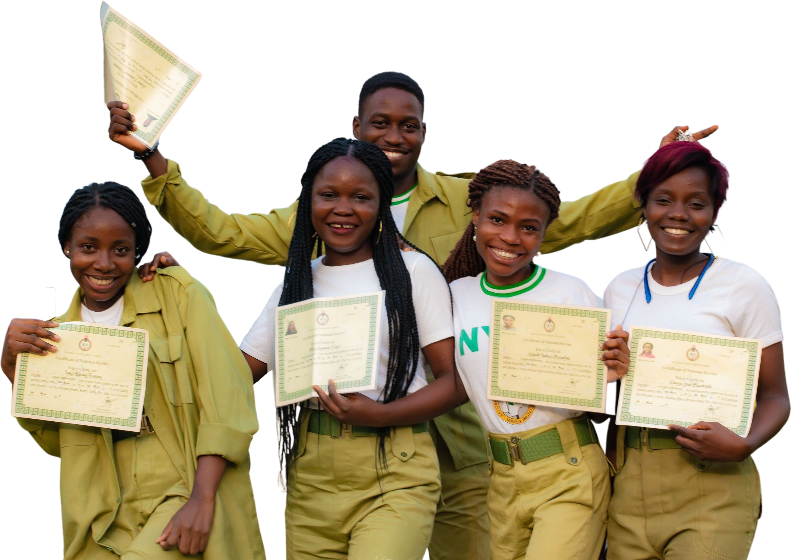

About Post Nysc Meeting
Post nysc meeting is a platform through which the Godhead will be pouring out their heart expressly to answer questions of young believers and also impact them with so much help and strength for the journey ahead.

See you on the
15th of May
No better way to spend a weekend
When you think of Post Nysc Meeting, think of destiny encountery to spend a public holiday
Register & Generate your personalized DP
Register